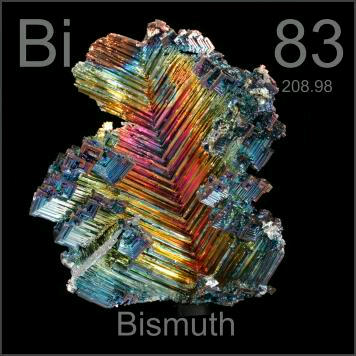

HOME
PREVIOUS
NEXT

Bismuth
Atomic Weight: 208.9804
Density: 9.78 g/cm3
Melting Point: 271.3 °C
Boiling Point: 1564 °C
Bismuth loves to form beautiful crystals. You can make small ones without even trying, but one this big requires very pure bismuth and careful control of the cooling rate as the crystal is formed.